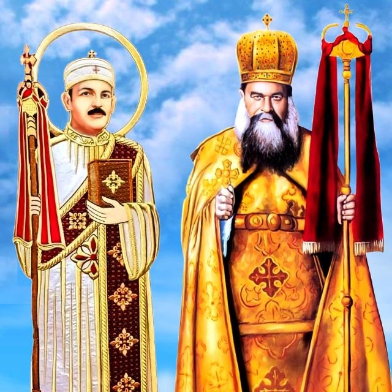

المنهج
كنيسة البابا كيرلس السادس والأرشيدياكون حبيب جرجس بشبرا الخيمة
مطرانية شبرا الخيمة وكل توابعها
تحت رعاية سيدنا الأنبا مرقس وإشراف آباء الكنيسة

المنصة التعليمية للمدرسة
ألحان الكنيسة
الطقس الكنسي
اللغة القبطية